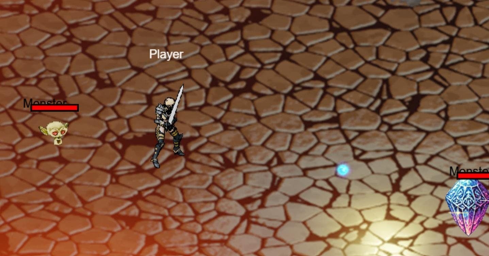
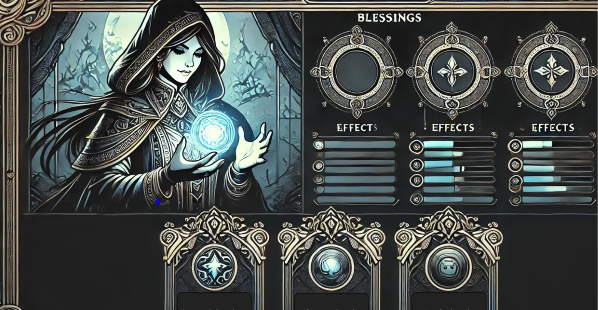
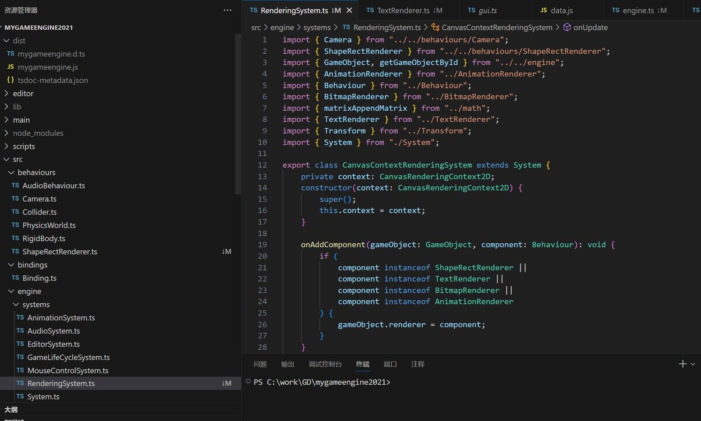
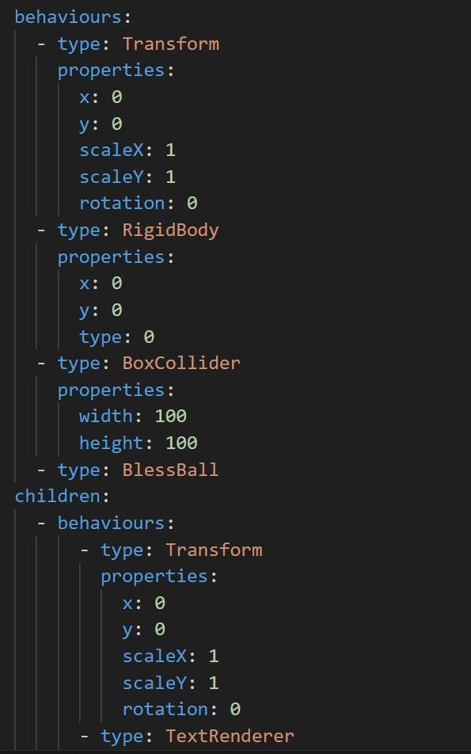
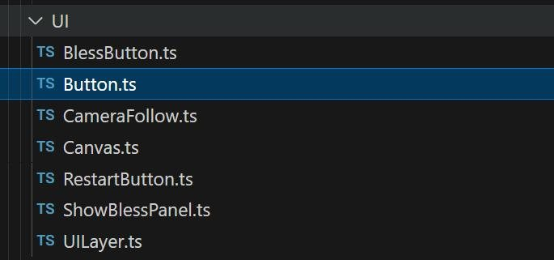
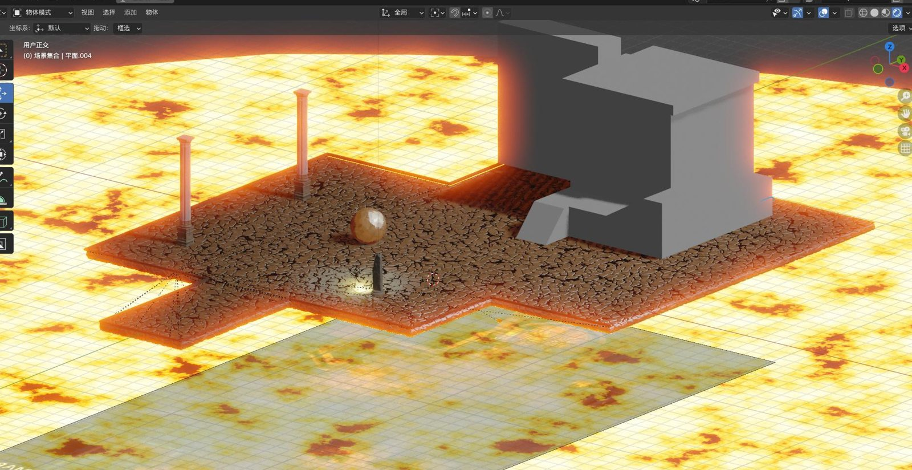
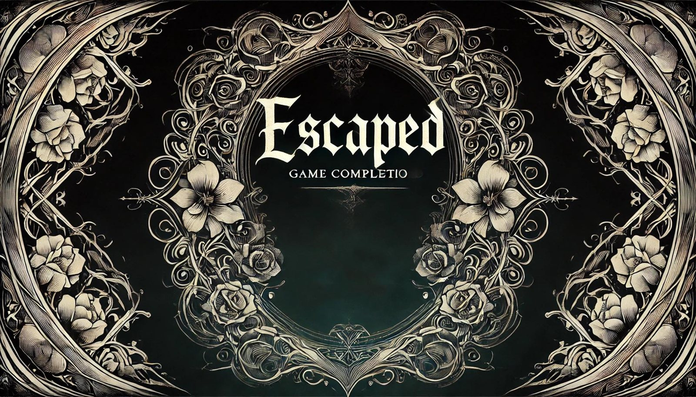

项目概述
Goddess 是一款 2D 动作冒险 Roguelike：玩家在不断变化的地下遗迹里八方向移动、攻击、闪避（带无敌帧）、使用技能；每关击败一定数量的敌人后进入下一关，战斗中和关卡之间可以获得临时强化或“祝福”符文。敌人有快速小怪、重甲守卫、施法者等不同类型，对应不同的战斗策略。
课程的目的是用最原始的引擎框架做一款完整的游戏，在过程中理解引擎的原理：场景和预制体在代码层面是怎么组织的、引擎核心组件是怎么协作的。没有可视化编辑器，场景和预制体都是手写的 YAML / JSON，要在控制台里启动游戏才能看到效果。


从零搭建 UI 系统
引擎只能显示图片和文字，没有点击检测，更没有 UI 组件。这是我遇到的最大挑战，也是我负责的核心部分：
- 先实现点击检测：用逆矩阵把屏幕坐标换算到各节点的局部坐标系，判断点击是否落在指定范围内。
- 参考 Unity 的结构实现 Canvas 组件，作为 UI 层的基类；在它之上做出 Button、Image、Text 等组件，以及祝福面板、重开按钮、相机跟随等具体界面。
- 血条、菜单、祝福选择面板等所有游戏内 UI 都建立在这套系统上。

美术流程
2D 素材其实来自 3D 模型：在 Blender 里用像素风 Shader 渲染，从固定视角抓取循环帧生成角色动画；场景也是 Blender 渲染出来的一张图。


分工与回顾
我负责
- 游戏设计
- UI 系统（点击检测、Canvas、按钮 / 图片 / 文字组件）
- 性能相关：场景与对象预加载、内存管理
团队其他成员负责
- 引擎框架（老师提供）
- 核心玩法逻辑（主程）
- 美术资产与优化
这个项目让我对引擎底层的理解变得具体：现在看一个 Unity 的 prefab 文本文件，大致就能读懂它在做什么。